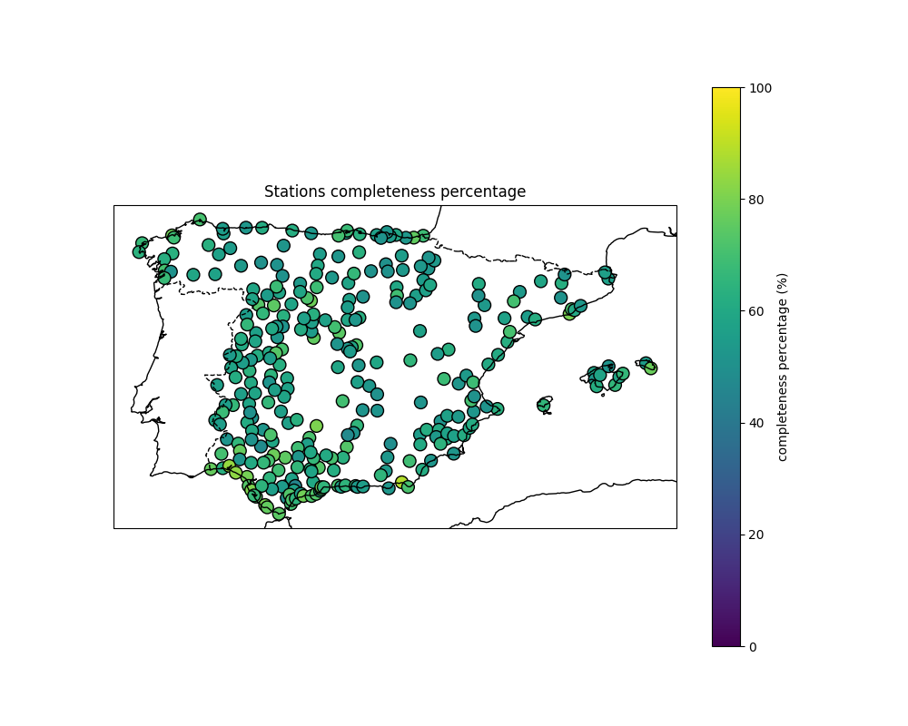
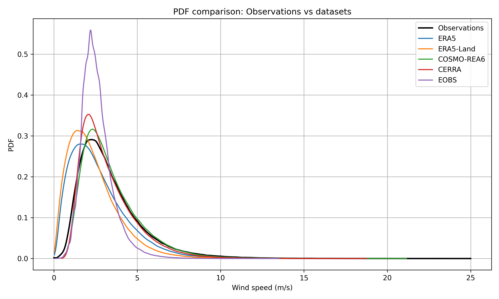
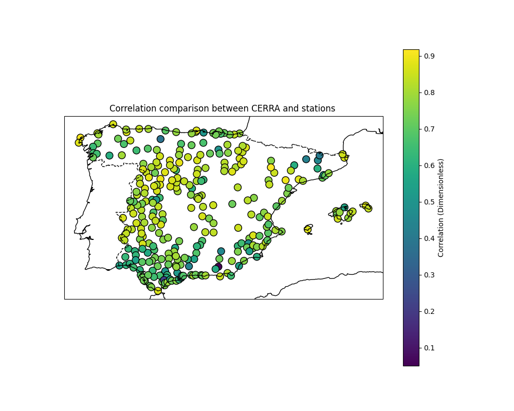
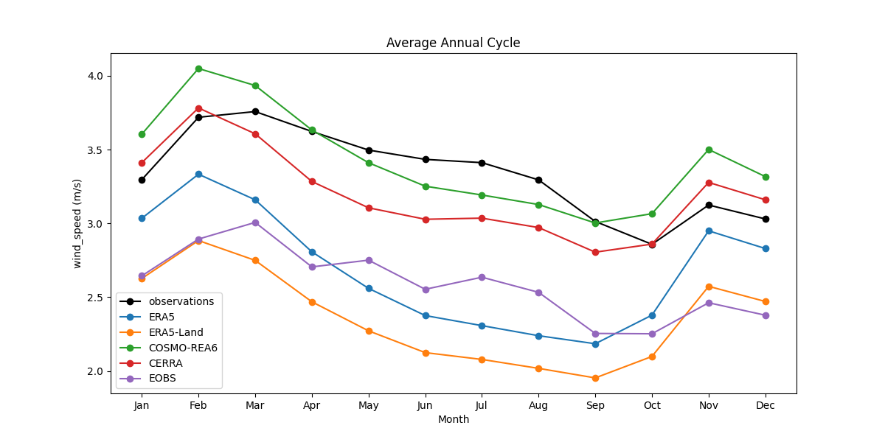

Downscaling for Climate Scenarios
Developed by Tragsatec for AEMET
Home
Data
Methodology
Evaluation
Downscaling
Applications
Information
EVALUATION - WIND SPEED


Maps Viewer
Correlation
K-S test p-value
K-S test stat
Kurtosis bias
Mean Absolute Error
Mean Bias
P10 Bias
P90 Bias
P95 Bias
RMSE
Skew Bias
Std Bias
Variance Bias
Wasserstein Distance
CERRA
COSMO-REA6
EOBS
ERA5-Land
ERA5

Grids Comparison
Annual Cycle
Correlation
K-S test p-value
KS test stat
Kurtosis bias
Mean Absolute Error
Mean Bias
P10 Bias
P90 Bias
P95 Bias
RMSE
Skew Bias
Std Bias
Variance Bias
Wasserstein Distance

← Back